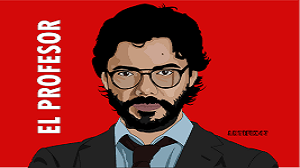
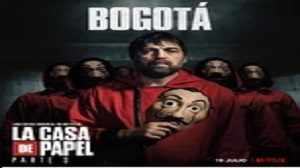

ProFessoR
Sergio Marquina (ProFessor)
Sergio Marquina, better known as The Professor ( El Profesor ),
is one of the main characters in the Netflix series Money Heist,
portrayed by actor Álvaro Morte.
He was the mastermind responsible for organizing the Royal Mint of Spain Heist and later oversaw the Bank of Spain Heist, which had been initially planned by
Berlin.
The Professor had been planning heists from a young age.
At the age of 19, he stopped renewing his identity card,
so that he would not be registered.
His father was a bank robber who would tell him stories of his heists when he was sick.
Berlin
Andrés de Fonollosa (Berlin)
Andrés de Fonollosa, is better known by his code name Berlin, is one of the main characters in the Netflix series Money Heist, portrayed by actor Pedro Alonso.
He is the second-in-command of the Royal Mint of Spain heist,
but also planned the Bank of Spain heist years prior,
which he shared with The Professor and Palermo.
Not much is known about Berlin’s early life. It is known that his mother had a relation with another man which resulted in the birth of his half brother, the Professor. Before the events of the series, he was diagnosed with Helmer’s Myopathy.
Tokyo
Silene Oliveira (Tokyo)
Silene Oliveira is
better known by her code-name Tokyo, is one of the main protagonists of the Netflix series Money Heist, as well as the narrator of the story. She is a member of the heist crew set to rob the Royal Mint of Spain.
A the age of 14, Tokyo joined her 28 year old boyfriend into a world of crime. Together, they successfully pulled off 15 heists.
The Professor, who warned her that her mother house was surrounded by police. He offered her to join his heist, along with 7 other robbers.
Nairobi
Ágata Jiménez (Nairobi)
Ágata Jiménez is
better known by her alias Nairobi is one of the main characters of the Netflix original series Money Heist played by actress Alba Flores.
she learned to counterfeit money at 13. During her teenage years, she had a boyfriend, who she later became pregnant with. Her boyfriend left after he found out about the pregnancy. Jiménez gave birth to a boy, she named him Axel. However, when Axel was 3, child services took him away from her after finding out she was dealing drugs.s It is also revealed that she gave birth to a daughter.
Denver
Daniel Ramos(Denver)
Daniel Ramos is
better known by his alias, Denver, is one of the main characters in the Netflix series Money Heist, portrayed by actor Jaime Lorente.
Denver was raised by his father Moscow
Denver and Moscow have done heists together. Moscow describes their relationship as "just like the Sacapuntas Duo, but with burglaries." Denver originally was not supposed to be part of the heist plan.
Denver & Mónica soon fall in love and start a relationship.
Mónica becomes loyal to the crew and escapes with Denver after the heist ends.
Between Part 2 and Part 3, while Denver and Mónica are hiding in Indonesia,
Monica gives birth to Arturo son Cincinnati and Denver becomes his step-father.
Rio
Aníbal Cortés (Rio)
Aníbal Cortés is
known by his alias, Rio ( es. Río ), is one of the main characters in the Netflix series Money Heist, portrayed by actor Miguel Herrán.
At young age he became interested in computers and began programming at the age of 6.He often locked himself in his room for hours. His parents believed that he was working or playing on his computer, but he was actually beginning his career as a hacker.
In 2010, he engaged in multiple cyber-attacks, which were all done discretely so the police couldn’t track him. He stole banking data and attacked North American servers. These hacks were reported by several online newspapers such as La Voz, La Nación, El Diario.com, however his identity was never discovered.
Mascow
Agustin Ramos (Moscow)
Agustin Ramos is
known by his code name Moscow, was one of the main protagonists in Part 1 and 2 of Money Heist. He was one of the eight robbers who went in to rob the Royal Mint of Spain and the father of Denver, another protagonist in the show.
His first job was a miner in Asturias. The job caused him to get silicosis, but what caused him to quit was claustrophobia, as he could not stand being in a small hole.He later became a thief and was sent to prison several times.
Little is known about Moscow childhood, but we find out in Part 2 that when his son, Denver, was very young, his wife was struggling with a drug addiction. Moscow revealed that he left his wife at a roundabout to pick up her drugs, but left with Denver before she returned, and moved elsewhere.
Lisbon
Raquel Murillo (Lisbon)
Raquel Murillo is
later known by her alias, Lisbon, was a Spanish police inspector that was assigned as the lead during the Royal Mint of Spain heist.
Raquel Murillo Fuentes was a Spanish Police Inspector based in Madrid.
Despite being a more than capable investigator, she is tricked by The Professor, who gets closer to her under his false identity of Salva Martín in order to affect police activity.
she falls in love with him and they run away together after the conclusion of the heist.
letting him escape with the money and finding him a year later in Palawan, an island in the Philippines.
She later joins the heist as Lisbon and acts as the Profesors second in line to the robbers inside the bank.
Murillo becomes part of the group of robbers as they prepare a second heist, this time targeting the Bank of Spain.
Helsinki
Mirko Dragic (Helsinki)
Mirko Dragic mostly known by his alias Helsinki, is one of the main characters in the Netflix series Money Heist, portrayed by actor Darko Perić.
He is one of the robbers of the Royal Mint of Spain and the Bank of Spain. In the Royal Mint heist, Helsinki was mainly in charge of watching over the hostages, teasing Arturo, and chatting with Oslo. In the second season, he suffocated Oslo, who was in a vegetative state.
Helsinki was born in Serbia. He was a soldier in the Yugoslav Wars with his cousin Oslo. He has a family in Serbia, to whom he sends money when he can.
During the war, he had a bullet taken out of him in a tractor garage.
Helsinki likes to make Arturo nervous, often belittling him by calling him "Arturito". In the last hours of the robbery, he covered him with fake explosives to scare him.
s
Oslo
Radko Dragić (Oslo)
Radko Dragić is
better known by his alias Oslo, is a secondary character in the Netflix series Money Heist, portrayed by actor Roberto García. He is a robber and war veteran who participated in the Royal Mint of Spain heist.
Oslo was born on November 17th, 1974 in Belgrade, Serbia.Oslo seems to have a no-nonsense attitude to work. Oslo fought in the Balkan Wars with his cousin Helsinki. Oslo died on October 24, 2016 at the age of 41
Oslo and cousin Helsinki act as hired guns and the muscle during the heist. They're usually seen acting as crowd control. They don't really think independently, and mostly just follow orders. Oslo and Helsinki helped Berlin to punish Rio in Part 1 Episode 3, and are also seen aiming guns at Denver and Nairobi during a standoff with Berlin in Part 1 Episode 9.
Stockholm
Mónica Gaztambide (Stockholm)
Mónica Gaztambide is
otherwise known as Stockholm, was working as the secretary of the Royal Mint of Spain until she was taken hostage by the robbers.
She fell in love with Denver, who looked after her when she was hidden in a vault. She later became a robber in parts 3, 4 and 5 when she decided to escape with the gang.
Mónica is well-educated and learns quickly. She only took 6 weeks to prepare for the entrance exams to get a job at the Royal Mint of Spain. While working as a secretary there, she begins an affair with Arturo Román.
Between Part 2 and Part 3, while Denver and Mónica are hiding in Indonesia, Monica gives birth to Arturo's son Cincinnati and Denver becomes his step-father.
Palermo
Martín Berrote
(Palermo)
Martín Berrote is
also known by his alias, Palermo, is one of the main characters in the Netflix series Money Heist, portrayed by actor Rodrigo de la Serna.
He is born in Buenos Aires, in Argentina and has known Berlin for at least 10 years. Prior to the second heist, he had lived in Palermo, Italy. He is a trained engineer.
After the robbery of the Royal Mint, when the crew needed a way to rescue Rio from captivity, The Professor started organizing the Bank of Spain heist, bringing Palermo into the fold at a time when he was in pain due to the loss of Berlin.
he was not part of the Royal Mint of Spain heist, he was an acquaintance of Berlin and The Professor prior to that. The Professor had his doubts about Palermo.

Bogotá
_UNKNOWN_(Bogotá)
Martín Berrote is
a character in the Netflix series Money Heist series, appearing as a main character in season 3 and season 4. He was part of the crew who carried out the robbery at the Bank of Spain.
Not much is known about Bogotá's early life. He has seven children around the world: Emilio (Venezuela), Julián (Mexico), Erik (Iceland), Hanna (Finland), Drazen (Montenegro), Yaris (Greece), and Ivanna (Ukraine).
In season 4, he fell in love with Nairobi.
Bogotá is the worlds best welder and has a vital role in the heist at the Bank of Spain. He is the main member in charge alongside Nairobi to lead the group that is melting the gold bricks in the national reserve into grains of gold at the Bank of Spain. It is through his talents of welding that the team is able to pull-off the successful extraction of the gold from the flooded vault. His welding and heroic efforts (placing a bomb underwater while being present in the enclosed vault, welding underwater without an oxygen tank) allow the heist to move forward as planned initially.
Marseille
Jakov (Marseille)
Jakov is
better known by his code name Marseille, is a character in the Money Heist series.
He appears as a recurring character in season 3 and as one of the main characters in season 4. He has never entered in the bank but helps the gang and the Professor from the outside.
Not much is known about Marseille's early life. It was mentioned that he was a hitman. The only family he spoke of was his late dog,
He would never hurt an animal.
He has a pet ferret named Sofía.
Marseille was a friend of Berlin, as we see him at Berlin and Tatiana's wedding. At Berlin's Wedding, Marsielle dances with the Professor, Bogotá, Tatiana, and Berlin.
Marseille crashes his car to make it look like the Professor was badly hurt. He is seen doing everything he can to help the Professor. He eventually goes to Algeria for the Professor to capture and record damning evidence against the police and the Spanish government.
Manila
Julia (Manila)
Julia is also known by her code name, Manila, is a character in the Netflix series Money Heist, portrayed by actress Belén Cuesta.
Born as Juan, her father Benjamin is a close friend of Moscow. She and Denver have been close friends since childhood, with Moscow mentioning how they were like siblings. Because she is a transgender individual, she eventually transitioned as Julia, which Denver and Moscow did not know about until they saw her again. She changed her gender, which she revealed to Denver and Moscow in Part 3.
Moscow requested that she join the gang when they were planning the robbery of the Royal Mint of Spain in Toledo. Julia joined the crew of robbers as requested by Moscow and Denver to The Professor, as they promised her father, Benjamin, that they would take care of her.
Although she was not included in the Royal Mint of Spain robbery, she did participate in the Bank of Spain heist. Her task consists of being among the other hostages, pretending to be one of them as a form of crowd control.
Arturo grabs Matías' gun, but is shot by Manila with a pistol Denver gave her earlier, revealing herself to be an undercover robber.
Matías Caño
Matías Caño
Matías Caño is
a supporting character who appears in the Bank of Spain robbery in Parts 3 and 4. He helps the gang out with melting and storing the gold and also guards the hostages and has been an associate of Bogotá for six years.
In his first appearance in the third episode, he is 'picked' as one of the 'volunteers' to work in the gold production area. He refuses to do it by saying he is 'no volunteer' which angers Nairobi and results in Bogotá dragging him downstairs to the other hostages' horror. It is later revealed that was all an act and that he is in on the heist and one of the undercover members hired to help the main gang out.
He spends the majority of Part 3 working in the gold shaft along with Nairobi, Bogotá and the other volunteers. He also assists the gang in helping to recover the Governor.
He stays downstairs with the hostages and stands in front of them, holding his gun at all times. When Arturo Román caused a commotion amongst the hostages, Matías approached him to warn him but was disarmed by Arturo. However, Manila, one of the hostages, revealed herself to have been an undercover agent of the gang, and almost immediately disposed of Arturo by shooting him in the leg and lending Matías his gun back.